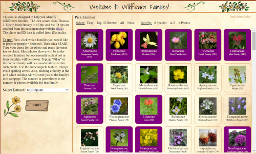
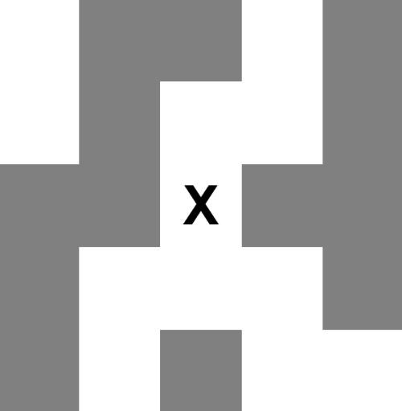

Projects
Wildflower ID Training Tool

This is a tool I created to help me learn to identify wildflower families.
It repeatedly shows you images of wildflowers in my home area pulled from iNaturalist
and you have to guess the wildflower family.
Take a Look >
Take a Look >
Photo Gallery
An interactive photo gallery layout I created from scratch to display some of my most artistic photos. This project helped me learn a lot about HTML flexbox, CSS variables, and CSS transitions. You can see the gallery at the link below or by navigating to the website's "Photography" tab.
Take a Look >
Take a Look >
Catch the Snitch
A Harry-Potter inspired program where you have one goal - click on the flying snitch to catch it. The snitch stops moving once you've caught it. Sounds easy, right? Go on then, give it a try...
Take a Look >
Take a Look >
Pig Latin
Some JavaScript code I wrote that will translate any website into pig latin. This is one of my favorite projects.
Take a Look >
Take a Look >
Interactive Graph Editor

This is a program I created when studying mathematical graphs in high school. It allows
you to input a graph and move around the vertices, a useful tool for identifying if two
graphs are the same. It also automatically generates the adjacency matrix of the graph,
which can be copied and used by other programs to analyze the graph. This is a much quicker
method of inputting graphs into a computer than creating the adjacency matrix by hand.
Take a Look >
Take a Look >
Frustration
This program came out a simple question - "How frustrating could I make a user interface
to use?" Try it out and see if you can keep your temper.
Take a Look >
Take a Look >
Shadows
A fun little program where you create polygons and then can move a light source
around to cast shadows.
Take a Look >
Take a Look >
Tank Trouble Remake
This is a remake of the popular online game Tank Trouble, that I did as a personal
challenge. Conveniently, it also means I can play the game with my friends without ads
or weird cookies.
Take a Look >
Take a Look >
Mastermind
The famous board game Mastermind! Now you can play it solo.
Take a Look >
Take a Look >
Isometric 3D Rendering from Scratch
This is an attempt to render a rotating cube completely from scratch (just JavaScript and an HTML
Canvas). I learned a lot about graphics and rendering through this project.
Puzzle Cube Solver
In an engineering class we created 3x3x3 puzzle cubes where you had to fit together several
pieces to form the complete cube. I wanted to see if my cube had a unique solution, so I wrote
a program that could solve the cube and output all possible solutions.
Three.js Experiment
This was a test I created in preparation for working on a multiplayer fencing
game (which I'm no longer working on).
Take a Look >
Take a Look >
Dodge Game
A simple game a friend and I made in an hour-long coding challenge. You move your mouse to dodge the moving red boxes.
Take a Look >
Take a Look >
Maze Player

A maze solver program, where you try to find your way through one of several mazes with limited vision. Good luck!
Take a Look >
Take a Look >